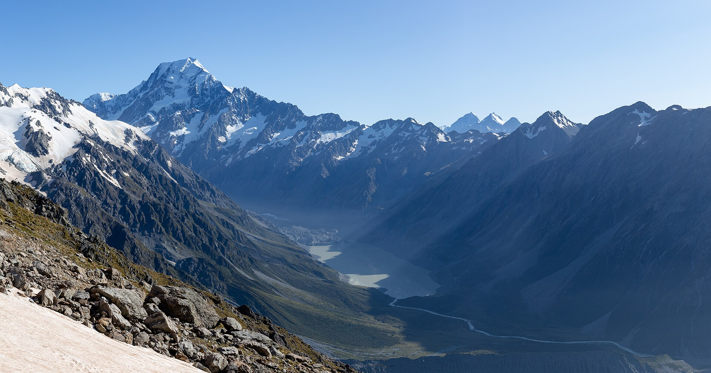
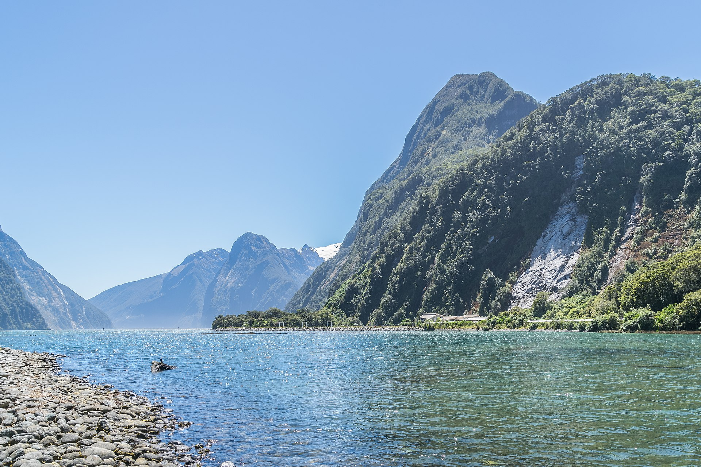

Two adults and two teenagers, Auckland to Queenstown, with two nights in Lake Tekapo. Times and prices follow the updated plan (NZ$ family estimates, checked September 2026); durations and tips come from the earlier page. Confirm with each operator before you pay.
Deep-water wildlife, then glacial blue and dark skies.
Check in for wildlife trip7:00 amWeather dependent
Whale-watching cruise7:30 amBook. NZ$620-700 · About 3 hrsMorning sailings are best. Cancellations are common; the operator usually rebooks or refunds. A flight is the backup ticket.
Seal colony lookout (optional)OptionalFree · 30 minKeep 20 metres away.
Early lunch, then drive to Tekapo11:00 am5-5.5 hrs driving
Arrive and check in at Lake Tekapo5:00 pm
Church of the Good Shepherd and lakefront5:30 pmFree
Tekapo Springs (optional)OptionalOptional. Hot pools · 2 hrsTickets online or at the door; no weeks of notice.
Optional stargazing experience9:30 pmBook. NZ$500-650 · 2 hrsDark Sky tours fill in December and cloud can cancel. You have two nights here: the 19th is the darker night (moon about 70% full, vs 80% on the 20th).

Aoraki/Mt Cook day trip from Tekapo
Glacier valley by day, a lake afternoon, and a second chance at dark skies.
Drive to Aoraki/Mt Cook7:30 am1 hr 20 min
Lake Pukaki viewpoints (optional)OptionalFree · 30 minSeveral signed lookouts off SH8, on the way out or back.
Arrive Queenstown; check in4:00 pmAbout 1 hr 15 min from Wānaka
Queenstown Panorama helicopter tour5:00 pmBook. NZ$385 pp · NZ$1,540 for 4 · About 1 hrAlpine weather can cancel: keep it flexible. Skip if budget is tight.
Pick one paid Wānaka activity. Puzzling World: 2 adults + 2 children aged 5-15, price valid to 31 Mar 2027. Lavender Farm: NZ$18 adult / NZ$9 child; if both teens are 16+, adult pricing applies. The Crown Range is alpine: in poor conditions take the longer route via Cromwell. Times are a suggested flow for the new Tekapo start (the helicopter moves from 4:00 to 5:00 pm).

Milford Sound day trip
A full day out from Queenstown into Fiordland.
Depart Queenstown or join a coach6:00 amAbout 4 hrs each waySelf-drive needs no road ticket but leave by 6 am. Check NZTA for Homer Tunnel delays. A day tour is the easier option.
Mirror Lakes and photo stops9:00 amFree · 15-20 minShort boardwalk.
The Chasm walk (optional)OptionalFree · 20-30 minStay behind the barriers.
Milford Sound / Piopiotahi cruise1:00 pmBook. NZ$450-650 self-drive · 2-2.5 hrsThe must-book ticket of the South Island. Nature cruise or coach + cruise both work.
Return toward Queenstown3:30 pmCoach package costs more
Optional Dart River experience3:30 pmBook. NZ$800-1,000 · About 2.5 hrs incl. transfersEasy to skip if the LOTR tour is enough.
Return to Queenstown6:30 pmFinal evening
TSS Earnslaw cruise (optional, final evening)OptionalOptional. Ticket needed · 1.5-2 hrsA short harbour cruise is simpler than the farm barbecue sailing.
Good to know
Rental car on the ferry
Ask the rental company in writing if the same car can cross Cook Strait. Some require a car swap in Wellington and Picton. Book the ferry only after confirming.
Road timing
NZ drives take longer than maps say. Add time for meals, fuel and photos. Check road conditions, ferry status and alpine weather the evening before each long day with the NZTA journey planner.
Queenstown helicopter
About 25 minutes including an alpine landing; allow 1 hour with check-in and briefing. NZ$385 per person, NZ$1,540 for four, or NZ$1,750 private. Weather dependent, with minimum numbers and weight limits.
Booked tickets to double-check
Your earlier page listed Hobbiton at 4:30 pm, the Māori evening at 3:00 pm and the ferry at 8:15 am. The updated plan uses 3:40 pm, 4:00 pm and 8:00 am. Use the times on your confirmations.